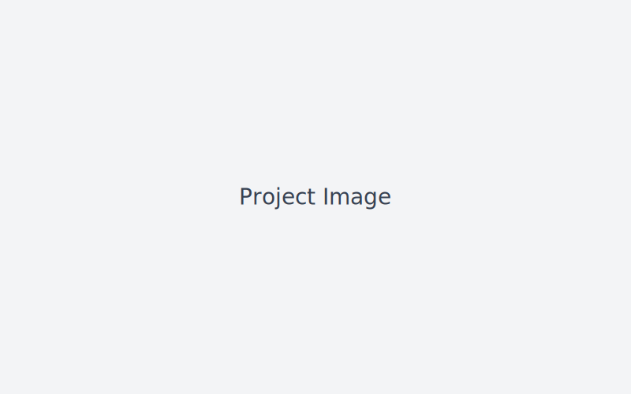

Home Server & NAS Setup
Personal homelab combining Proxmox, TrueNAS Scale, and pfSense for a complete storage and network management environment.
- 2.5Gb network backbone
- RAID configurations for redundancy
- Multiple VMs for media, cloud, and automation
